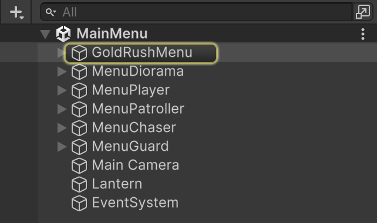
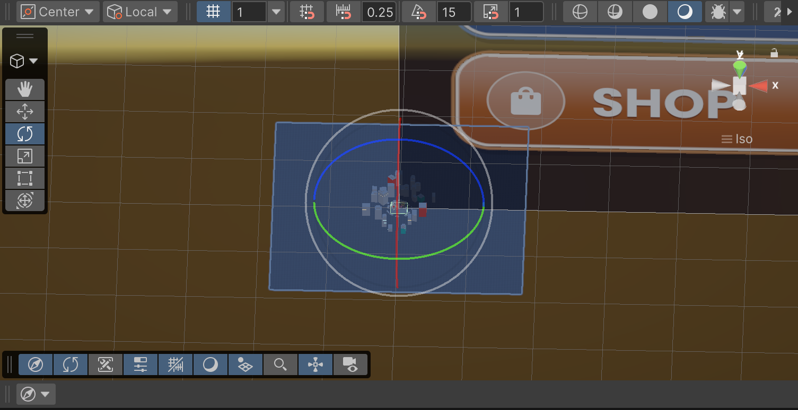
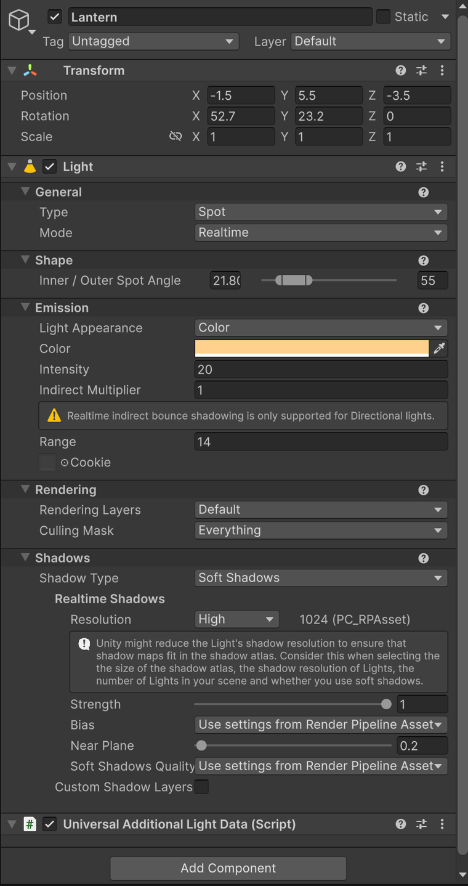
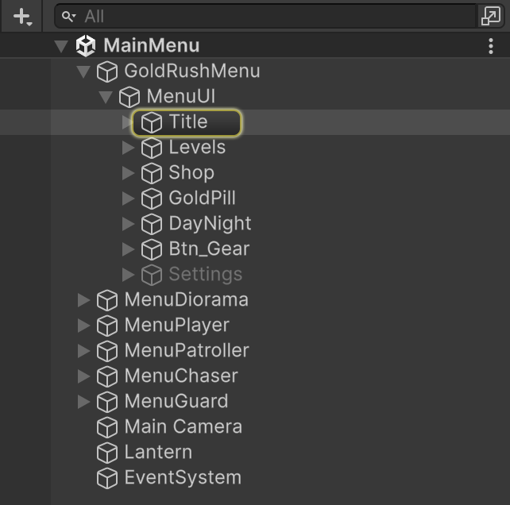
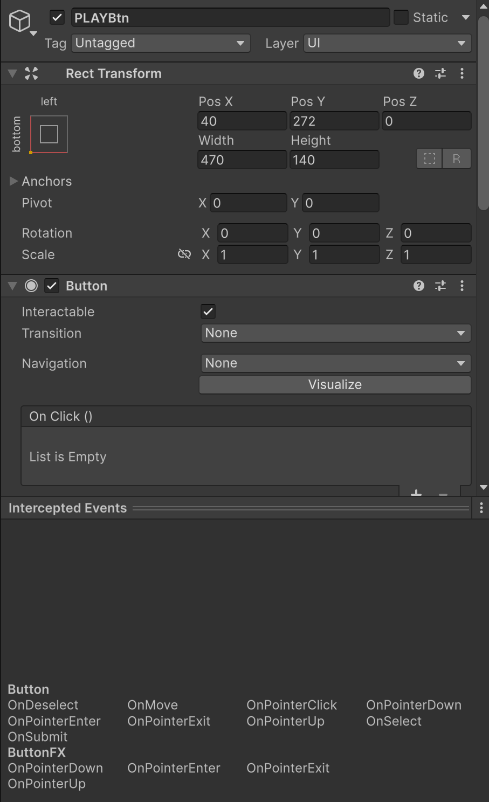
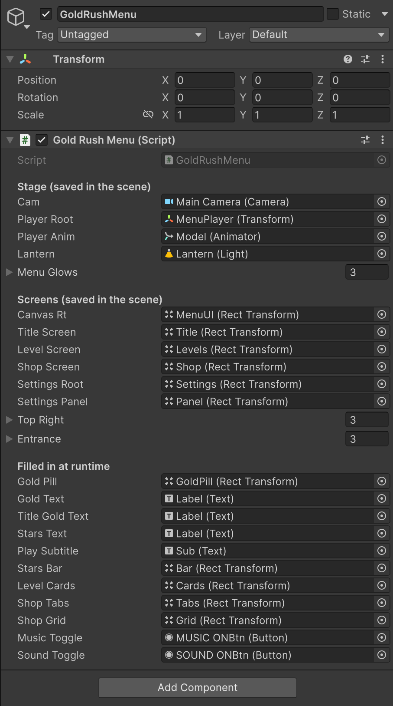

GOLD RUSH · Phase 1
The main menu
You import the finished main menu. It is a small 3D stage made from the kit, with the hero who waves at you, three monsters, a warm lantern and a slowly moving camera. On top of it sits the title screen in a frosted-glass style: the 3D "GOLD RUSH" logo, the tagline, the PLAY / LEVELS / SHOP buttons and the chips at the top left. You check how it is built and how a click reaches the script.
1What you get
The package has everything from Phase 0 plus:
- The scene
Scenes/MainMenuwith the whole menu: the stage, the title screen and the other screens (Levels, Shop, Settings; you look at those in Phase 2). - All the game scripts in
Scripts/, the Animator Controllers and the assetResources/GoldRushAssets(the list of models, sounds and the sky that the scripts use).

2Import
- Make a new empty project as in Phase 0, steps 2–5 (Universal 3D, AI Navigation, Active Input Handling = Both). Or delete the folder
Assets/GoldRushin your Phase 0 project. - Open Assets → Import Package → Custom Package… → choose
GoldRush_Phase01_MainMenu.unitypackage→ Import (keep everything ticked). - Open File → Build Profiles → Scene List. Drag
Scenes/MainMenufrom the Project window into the list. It must be number 0. Close the window. - Double-click
Scenes/MainMenuto open it. - In the Game view, open the aspect menu (top left, "Free Aspect") and pick Full HD (1920x1080).
3Check
Click each object in the Hierarchy and look at the Inspector. Compare with the picture.
Check 1 · The scene objects
Everything is a normal GameObject saved in the scene:
| Object | What it is |
|---|---|
GoldRushMenu | Has the script Gold Rush Menu. Its child MenuUI is the Canvas with all screens. |
MenuDiorama | The 3D stage (floor, walls, blocks, lamps, coins). |
MenuPlayer | The hero. His child Model has the Animator. |
MenuPatroller, MenuChaser, MenuGuard | The three monsters behind the hero (Slime, Ghost, Mushroom King), each with a coloured Glow light. |
Main Camera, Lantern | The camera and the warm spot light on the hero. |
EventSystem | Sends mouse clicks and touches to the UI. Without it no button works. |

Check 2 · The 3D stage
Open MenuDiorama. The kit pieces are sorted into groups: Floor, Walls, Obstacles, Lamps, Decor, Scenery and Dynamic (two spinning coins). The hero stands on a cyan floor pad at 0, 0, 0.
- Each
LampPost/LampLighthas a Night Light component: the lamp only shines at night. MenuDioramahas a Day Night Tint component: a list of materials with a day colour and a night colour (for example the floor is light grey by day and navy blue by night).

Check 3 · The hero
Select MenuPlayer/Model. This is Hero.fbx at scale 0.337 (1.35 m tall). Its Animator uses the controller Hero (from Art/Characters/Controllers). Apply Root Motion is off: the script moves the hero, not the animation.

Check 4 · Camera and lantern
Main Camera: Field of View 40, Near 0.1, Far 400. Its position does not matter much: in Play mode the script moves the camera every frame.
Lantern: a warm Spot light above-left of the hero, Position -1.5, 5.5, -3.5, colour FFD18C, Intensity 20, Range 14, Spot Angle 55, Soft Shadows.

Check 5 · The Canvas
Select GoldRushMenu/MenuUI. A Canvas is the surface the UI is drawn on.
- Canvas: Screen Space - Overlay, Sort Order
10. - Canvas Scaler: Scale With Screen Size, Reference Resolution
1920 × 1080, Match0.5. The UI is designed for Full HD and grows or shrinks with the screen. - Graphic Raycaster: finds which UI image is under the mouse.

Check 6 · The Title screen
Open GoldRushMenu/MenuUI/Title. Positions are in UI pixels (1920 × 1080).
| Child | Where | What it is |
|---|---|---|
BackdropTop, BackdropLeft | top (420 high), left (820 wide) | Soft dark fades, so white text reads on the bright stage. |
Btn_Gear, DayNight | top left, x 32 and 122, 76 × 76 | Round chips: settings, and the sun / moon switch. |
Gold, Stars | top left, x 212 and 426, 200 × 76 | Pill chips: your gold, and your stars with a small bar. |
LogoGlow, Logo | top centre, y -60 and -228 | A soft gold glow and the 3D logo (script Logo Title). |
Tagline | top centre, y -350 | GRAB • DODGE • ESCAPE |
PlayGlow, PLAYBtn, LEVELSBtn, SHOPBtn | bottom left, x 40, y 272 / 166 / 60, 470 wide | The big buttons (PLAY is 140 high, the others 90). |
Label | bottom right | The version text v1.0. |
The glass style. Every chip and button is a few stacked images. From back to front:
| Layer | What it does |
|---|---|
Shadow | A soft dark copy, a little lower. The piece seems to float. |
Tint | Dark navy, see-through. White text stays readable on a bright background. |
Glass (or Face) | The frosted surface. It is the part that gets the clicks. |
Edge | A thin bright outline in the same shape. |

Check 7 · A big button
Select Title/PLAYBtn. It has four components:
- Button: makes it clickable.
- Button FX: the feel. It grows and glows on hover, a light sweeps over it, it shrinks when you press it. It finds its parts by name:
Halo,Face,Edge,EdgeGlow,Sweep,IconDisc,Content,Chevron. - Canvas Group: lets the button fade.
- Menu Action: one word that says what the button does.
| Button | Menu Action | Colour |
|---|---|---|
Title/PLAYBtn | play | cyan |
Title/LEVELSBtn | levels | blue |
Title/SHOPBtn | shop | orange |
Title/Btn_Gear | settings | glass |

Check 8 · The Gold Rush Menu fields
Select GoldRushMenu. The script has three groups of fields. They point to objects in the scene:
- Stage: Cam =
Main Camera, Player Root =MenuPlayer, Player Anim =MenuPlayer/Model, Lantern =Lantern, Menu Glows = the threeGlowlights of the monsters. - Screens: Canvas Rt =
MenuUI, Title Screen =Title, the other screens, and Entrance = PLAYBtn, LEVELSBtn, SHOPBtn (they slide in). - Filled in at runtime: the texts and boxes the script writes into: gold, stars, the PLAY subtitle, …

4How it works
Open Scripts/UI/MenuAction.cs and Scripts/UI/GoldRushMenu.cs. You do not change them. These are the key lines:
// MenuAction.cs: on every menu button
public string action = "play";
void Awake()
{
GetComponent<Button>().onClick.AddListener(() =>
{
AudioFX.Play("click");
if (GoldRushMenu.I) GoldRushMenu.I.Run(action);
});
}
// GoldRushMenu.cs
public void Run(string action)
{
switch (action)
{
case "play": StartLevel(Mathf.Clamp(Save.Data.unlocked - 1, 0, Levels.All.Length - 1)); break;
case "levels": Show(Screen.Levels); break;
case "shop": Show(Screen.Shop); break;
// back, settings, closeSettings …
}
}- A button knows what to do by a word. On click,
MenuActionplays the click sound and callsGoldRushMenu.I.Run(action).GoldRushMenu.Iis the one menu in the scene. - The scene holds the objects, the script only connects them. In
Start()the script builds things from code only if a field is empty (if (!cam) BuildWorld();). Here everything is in the scene, so it skips that. - The mood.
EnvironmentSetup.Apply(cam, true, true)makes the night sky, fog, glow (bloom) and the sun when Play starts. That is why the editor looks different from Play mode. - The hero waves. In
Update(): after 3 seconds, and then every 9 seconds,playerAnim.SetTrigger(AnimParams.Win)plays the Wave animation. - The camera swings.
UpdateCamera()turns the camera slowly left and right (10f * Mathf.Sin(Time.time * 0.22f)degrees). - The buttons slide in.
PlayEntrance()moves each Entrance button 640 pixels to the left and lets it slide back, one after the other. - The logo.
LogoTitlestacks 15 text layers: a shadow, 12 darker "depth" layers, a light rim and the gold / cyan face. The depth follows the mouse, and the logo wobbles when you point at it.
5▶ Press Play
- Open
Scenes/MainMenuand press ▶ Play. - Move the mouse over the logo and over the buttons.
- Click the sun / moon button.
- Click PLAY. Look at the Console.
- Click ▶ again to stop.
You should see:
- The screen fades in from black. Music plays. The lamps, the lantern and the monster glows shine.
- The GOLD RUSH logo pops in. It tilts toward the mouse and wobbles when you point at it.
- PLAY, LEVELS and SHOP slide in from the left. A button grows, glows and gets a light sweep when you point at it.
- The hero waves after 3 seconds, then every 9 seconds. The camera swings slowly.
- The moon / sun button switches between night and day.
- PLAY: the screen goes black and comes back. The Console says Scene 'Level1' couldn't be loaded… That is normal: Level1 comes in Phase 3.
6Try it
- Rewire a button. Select
Title/LEVELSBtn. In Menu Action, change Action fromlevelstoshop. Press Play and click LEVELS: the shop opens. Change it back. - Wave more often. In
GoldRushMenu.cs, inUpdate(), changenextWave = Time.time + 9f;to3f. Save. The hero now waves every 3 seconds. Change it back. - A stronger glow. Select
Title/LogoGlow. In Bob, change Pulse from0.05to0.3. Press Play: the glow behind the logo pulses a lot. Change it back.
7Common problems
| Problem | Fix |
|---|---|
Red errors after the import, or two copies of a script (GoldRushMenu 1.cs). | Import into a new empty project, or delete Assets/GoldRush first. Install AI Navigation before you import. |
| Red error: You are trying to read Input using the UnityEngine.Input class… | Active Input Handling must be Both (Phase 0, step 5). |
| Buttons do nothing when I click. | Is EventSystem in the scene? Are you in Play mode and clicking in the Game view? |
| Console: Unknown menu action. | A typo in Menu Action → Action. Use exactly play, levels, shop, back, settings, closeSettings. |
| The UI looks tiny or huge. | Game view: Full HD (1920x1080). Canvas Scaler: 1920 × 1080, Match 0.5. |
| The stage looks flat or too bright in the editor. | Normal. The night mood, fog and glow are made by the script in Play mode. |
More fixes are on the Troubleshooting page. New words are in the Glossary.
Next: in Phase 2 you look at the Levels screen, the Shop, the Settings dialog and the save data.